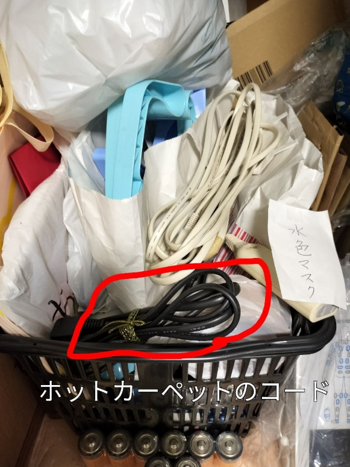
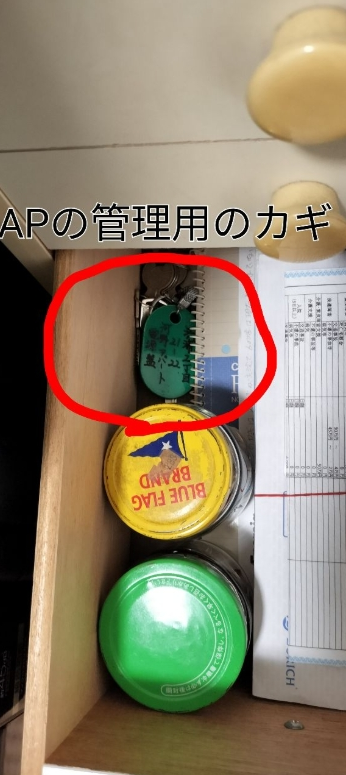
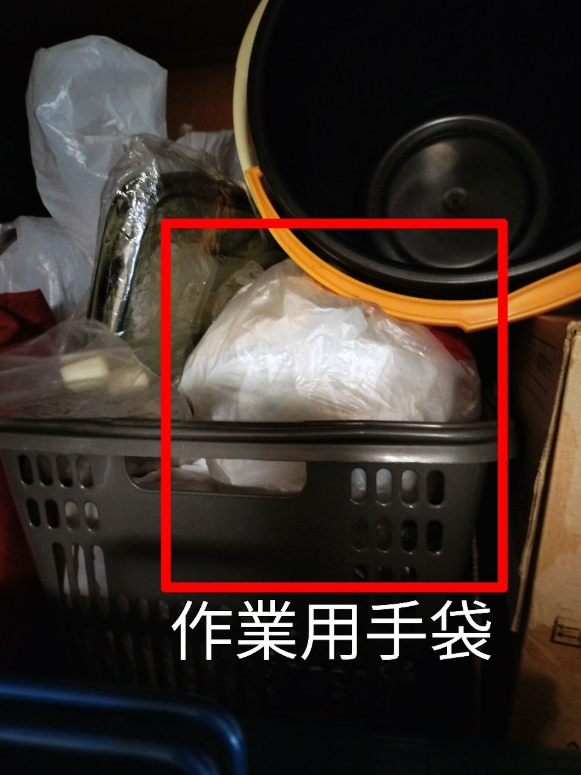

開発の経緯
Why I made this app
개발 배경
开发缘由
開發緣由
日々の買い物で「買う物のメモ書き」を作成して持参していませんか？店舗でメモを見ながらカゴに入れたら線を引き・・・ですよね😢
When you go shopping, do you write a memo of what to buy and carry it with you? Look at the memo in the store, put things in the basket, and cross them out... right? 😢
매일 장을 볼 때 "살 물건 메모"를 만들어 가지고 가시나요? 매장에서 메모를 보며 장바구니에 담고 줄을 긋고…… 그렇죠? 😢
每天买东西时，您是不是会写好“要买的东西的备忘”带去呢？在店里一边看备忘一边放进购物篮，再划线……对吧？😢
每天買東西時，您是不是會寫好「要買的東西的備忘」帶去呢？在店裡一邊看備忘一邊放進購物籃，再劃線……對吧？😢
私達夫婦も高齢になり、メモ作成が億劫で面倒になり、何とか簡単に出来ないものかと考えこのアプリを開発しました。
My wife and I have grown older, and writing a memo every time became a bother. I wondered if it could be made easier, and so I developed this app.
저희 부부도 나이가 들어 메모를 쓰는 것이 귀찮아졌고, 어떻게든 간단하게 할 수 없을까 생각하다가 이 앱을 개발했습니다.
我们夫妻也上了年纪，写备忘变得麻烦又费劲，心想能不能想办法变得简单一些，于是开发了这个应用。
我們夫妻也上了年紀，寫備忘變得麻煩又費勁，心想能不能想辦法變得簡單一些，於是開發了這個應用程式。
その他にも「日常の困りごと」をひとつに纏めて解決できればと考え多機能アプリに仕上げました。
I also wanted to solve other "everyday troubles" in one place, so I built it as a multi-function app.
그 밖에도 "일상의 불편함"을 하나로 모아 해결하고 싶어서 다기능 앱으로 완성했습니다.
除此之外，我们还想把“日常生活中的烦恼”集中在一起解决，所以把它做成了多功能应用。
除此之外，我們還想把「日常生活中的煩惱」集中在一起解決，所以把它做成了多功能應用程式。
例えば、「あれ、どこに置いたっけ・・・」と、探し回った経験はありませんか？私達も自分達が片づけて「しまい込んだ物」の場所を覚えられず、思い出せず、で、結果、持っているのに再購入してしまうことが度々ありました。年を重ねて高齢になると記憶との戦いが始まります。
For example, haven't you ever searched around thinking "Now, where did I put it...?" We could not remember where we had "stored things away" ourselves, and as a result we often bought things again even though we already had them. As you get older, the battle with memory begins.
예를 들어 "어, 어디에 뒀더라……" 하고 찾아 헤맨 경험은 없으신가요? 저희도 직접 정리해서 "넣어 둔 물건"의 위치를 기억하지 못하고 떠올리지 못해, 결국 가지고 있는데도 다시 사 버리는 일이 자주 있었습니다. 나이가 들면 기억과의 싸움이 시작됩니다.
比如，您有没有过“咦，我把它放哪儿了……”四处翻找的经历？我们也记不住自己收拾起来的“收好的东西”放在哪里，想不起来，结果明明有却又买了一次，这种事经常发生。人上了年纪，就开始了与记忆的战斗。
比如，您有沒有過「咦，我把它放哪兒了……」四處翻找的經歷？我們也記不住自己收拾起來的「收好的東西」放在哪裡，想不起來，結果明明有卻又買了一次，這種事經常發生。人上了年紀，就開始了與記憶的戰鬥。
ここに3枚の写真があります。これは、数年前から私達が片づけてしまい込んだ状態をスマホで撮影後に簡単な編集をして保存した写真です。こうやって写真で記録するようになって以後、見つけられずに購入することはなくなりました。
Here are three photos. They are photos we have taken with a smartphone, after tidying things away, and saved after simple editing, for several years now. Since we began recording this way with photos, we have never again bought something because we could not find it.
여기에 사진이 3장 있습니다. 몇 년 전부터 저희가 정리해서 넣어 둔 상태를 스마트폰으로 찍은 뒤 간단히 편집해서 저장한 사진입니다. 이렇게 사진으로 기록하게 된 뒤로는 찾지 못해서 다시 사는 일이 없어졌습니다.
这里有3张照片。这是几年前开始，我们用手机拍下收拾起来的状态，简单编辑后保存的照片。自从这样用照片来记录以后，就再也没有因为找不到而重新购买了。
這裡有3張照片。這是幾年前開始，我們用手機拍下收拾起來的狀態，簡單編輯後儲存的照片。自從這樣用照片來記錄以後，就再也沒有因為找不到而重新購買了。



ある時、娘から「アレクサに覚えてもらえばいいのに」と勧められ挑戦してみましたが、記憶させた内容を必要な時に瞬時に思い出せず、うまくいきませんでした。
One day my daughter suggested, "Why not have Alexa remember it?" I tried, but I could not recall what I had stored at the moment I needed it, and it did not work well.
어느 날 딸이 "알렉사에게 기억시키면 되잖아요" 하고 권해서 도전해 보았지만, 기억시킨 내용을 필요할 때 바로 떠올리지 못해서 잘 되지 않았습니다.
有一次，女儿建议“让 Alexa 帮你记住不就好了”，我们试了一下，但需要的时候无法立刻想起记住的内容，没有成功。
有一次，女兒建議「讓 Alexa 幫你記住不就好了」，我們試了一下，但需要的時候無法立刻想起記住的內容，沒有成功。
「重要事項を書き込んだ写真なら簡単に確認可能」そうです、文字だけ写真だけでは駄目なんです。この【DokoOita】は、そんな「くらしの困った？」を手助けするアプリです☺
"A photo with the important points written on it makes it easy to check." That's right: words alone, or a photo alone, are not enough. [DokoOita] is an app that helps with such "little troubles in daily life" ☺
"중요한 내용을 적어 넣은 사진이라면 쉽게 확인할 수 있다." 그렇습니다, 글자만으로도 사진만으로도 부족합니다. 이 [DokoOita]는 그런 "생활 속 곤란함"을 도와주는 앱입니다 ☺
“写上重要事项的照片，就能轻松确认。”没错，只有文字或只有照片都不行。这个【DokoOita】，就是帮您解决这类“生活中的小烦恼”的应用☺
「寫上重要事項的照片，就能輕鬆確認。」沒錯，只有文字或只有照片都不行。這個【DokoOita】，就是幫您解決這類「生活中的小煩惱」的應用程式☺